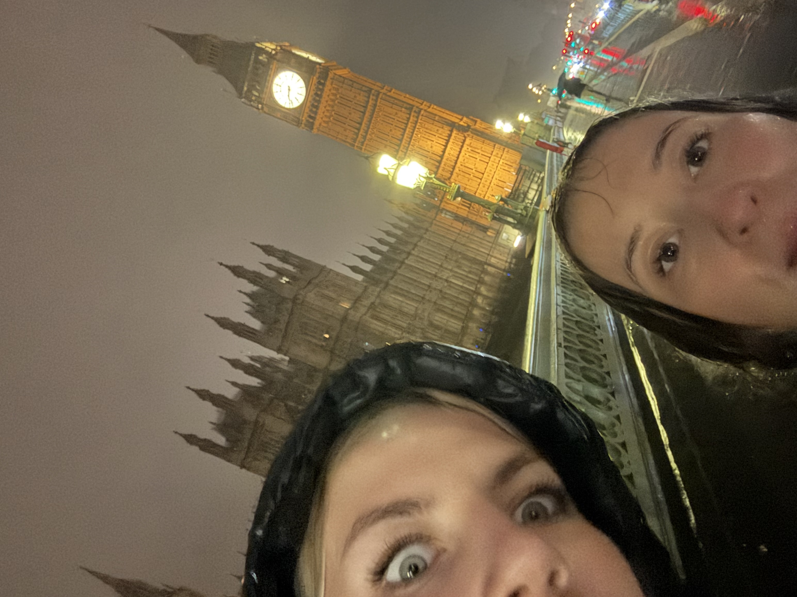
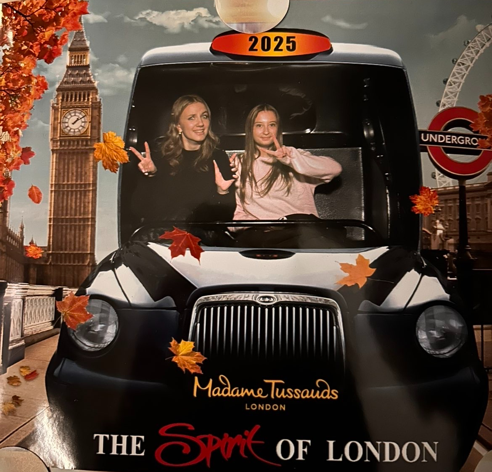
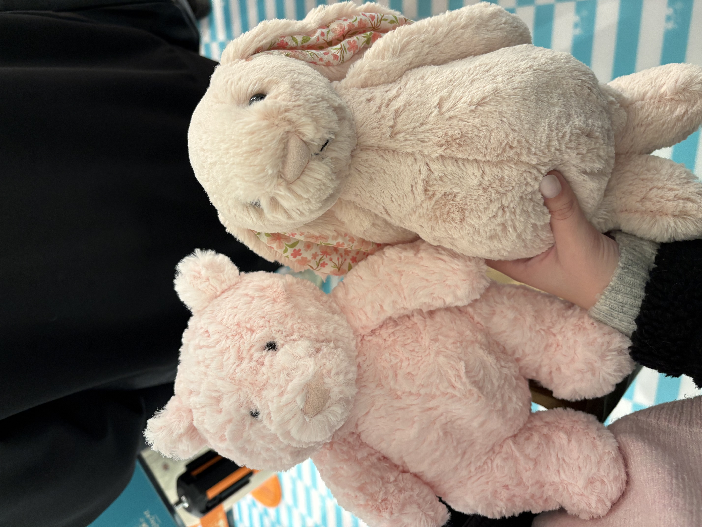
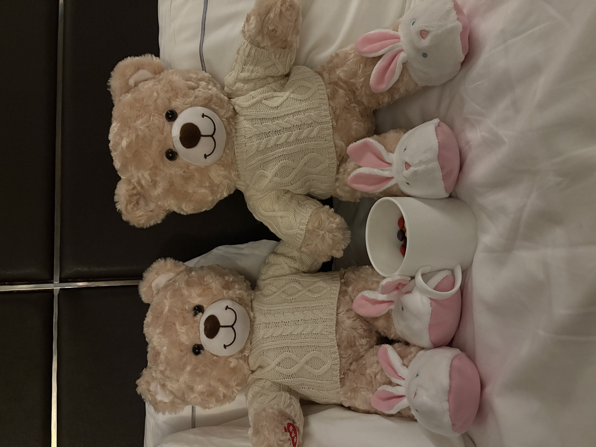
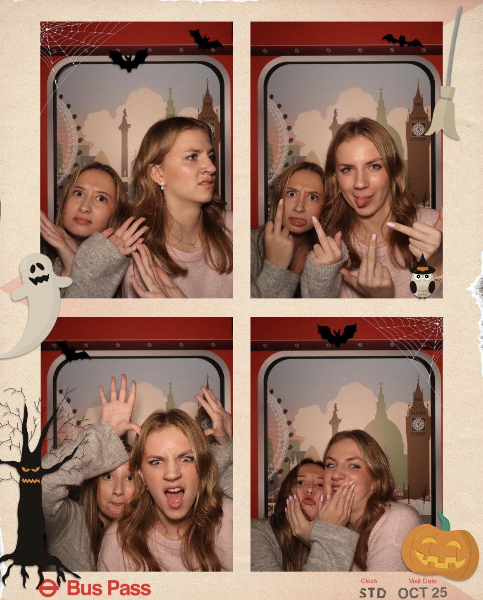

Bästa resan nånsin med bästa sällskapet
Många fina minnen skapades
________________________________________________
Allt började med resan dit✈️➔🇬🇧
Jag åkte till London tillsammans med min bästa kompis Elsa och hennes föräldrar. Vi började med att åka bil till Landvetter. Sedan flög vi först till Nederländerna och mellanlandade snabbt där, det var ganska ont om tid innan nästa flyg gick. Efter det flög vi vidare till London. Vi hade bara handbagage vilket var skönt när vi landade för vi behövde inte stå och vänta på vårat bagage. Vi tog sedan tunnelbanan i ungefär en timme för att komma in till stan. Sedan gick vi några minuter till vårt hotell.
Hotellet i London
Vi bodde på Park Plaza London Westminster Bridge. Hotellet låg precis vid Westminster Bridge, så både Big Ben och London Eye var nära. Från vissa av fönstren på hotellet kunde man även se Big Ben, vilket var ganska häftigt. Jag och Elsa delade på ett eget rum och hennes föräldrar på ett annat rum. Hotellrummet var rymligt och vi hade gott om plats för våra saker. Varje morgon åt vi frukost på hotellet innan vi gav oss ut för att upptäcka London.
Resans roliga aktiviteter
Under resan hann vi göra väldigt mycket. Första dagen gick vi runt och kollade på flera kända platser i London. Vi gick bland annat över Tower Bridge och såg Big Ben och London Eye. Vi gick även till en historisk skräckattraktion som var väldigt spännande. Dagen efter åkte vi till Madame Tussauds. Det är ett museum med vaxfigurer av kända personer, bland annat Taylor Swift, Harry Styles och Yoda. Vi tog väldigt många bilder där och det var en av de roligare sakerna vi gjorde under resan. Efter det gick vi runt och shoppade. Först gick vi till en marknad och sen till Harrods som är en jättestor och känd butik i London.


Den goda maten am am am
Maten var också en stor del av resan och vi åt lite olika saker under dagarna. Det blev bland annat pizza och hamburgare när vi ville ha något enkelt, men vi testade även lite mer typisk engelsk mat. En dag gick vi in på ett mysigt café där jag åt en kaka med Oreo-smak. Den var verkligen jättegod och vi satt där en stund och tog det lugnt efter att ha gått runt så mycket. En kväll gick vi till en traditionell engelsk pub och där åt jag fish and chips. Maten var god och det var kul att få testa något som man verkligen förknippar med England.
Alla helt nödvändiga saker vi köpte
En stor del av resan var såklart också att shoppa. På marknaden hittade vi små saker att köpa. Vi köpte bland annat varsin nyckelring som man kan scanna och så kommer man till en låt. Vi gjorde också matchande armband med olika berlocker, vilket var kul eftersom vi kunde välja saker som passade oss båda. Senare åkte vi till Harrods, som är ett väldigt stort och känt varuhus i London. Där gick vi runt bland alla olika avdelningar och kollade på allt möjligt. Vi köpte ett varsitt gosedjur som vi kunde ta med hem som minne från resan. Vi gick även till Build-A-Bear, där man får skapa sitt eget gosedjur. Jag och Elsa gjorde varsitt och valde kläder och andra saker till dem så att de matchade. De blev ganska dyra i slutändan, men det var ändå en av de roligaste sakerna vi köpte eftersom vi fick göra dem själva. Efter shoppingen tog vi bilder i en fotoautomat. Bilderna blev kanske inte perfekta, men det gjorde dem nästan bara roligare och nu har vi dem kvar som minne från resan.



Det slutade med resan hem
Efter några dagar i London var det dags att åka hem. Vi tog ett direktflyg från London till Göteborg, så vi slapp mellanlanda. Det kändes lite tråkigt att lämna, men vi hade haft en jätterolig resa tillsammans. Jag är väldigt glad att jag fick uppleva allt detta med Elsa och hennes föräldrar, och jag kommer att minnas resan länge.
________________________________________________